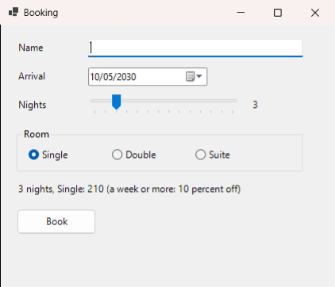

More input controls
A date picker, a slider, radio buttons, tool tips and an error marker are the controls that make a form pleasant to fill in. This lesson builds a booking form with all of them and tests it by changing the values like a user.
What you will learn#
DateTimePicker: the date, the limits and the format,TrackBar: a slider with whole numbers and its change event,RadioButtonandGroupBox: one choice out of a few,ToolTip: text that appears when the mouse rests on a control,ErrorProvider: an error icon with a message next to a control,- keeping the price in one function that the controls call.
The tutorial A form with many controls used text boxes, a combo box and check boxes. These are the other controls that you find in most forms.
The program#
# more input controls - a date picker, a track bar, radio buttons, tool tips and an error marker (a booking form)
load "dotnet.ring"
using {
"System"
"System.Drawing"
"System.Windows.Forms"
}
# controls that the event code uses are global variables
oForm = ""
oName = ""
oDate = ""
oNights = ""
oNightsLabel = ""
oSingle = ""
oDouble = ""
oSuite = ""
oPrice = ""
oErrors = ""
oTips = ""
oResult = ""
oBook = ""
func main
oForm = uiForm("Booking",420,330)
uiLabel(oForm,"Name",20,20,80,22)
oName = uiTextBox(oForm,110,18,270,24)
# a date picker: Value is a DateTime. MinDate and MaxDate limit the choice, and Format chooses how the date is shown.
uiLabel(oForm,"Arrival",20,56,80,22)
oDate = new DateTimePicker()
oDate.Location = new Point(110,54)
oDate.Size = new Size(150,24)
oDate.Format = "Short"
oDate.Value = new DateTime(2030,5,10)
oDate.MinDate = new DateTime(2030,1,1)
oDate.MaxDate = new DateTime(2030,12,31)
oForm.Controls.Add(oDate)
# a track bar: a slider with whole numbers
uiLabel(oForm,"Nights",20,92,80,22)
oNights = new TrackBar()
oNights.Location = new Point(105,86)
oNights.Size = new Size(200,40)
oNights.Minimum = 1
oNights.Maximum = 14
oNights.Value = 3
oNights.TickFrequency = 1
oNights.setValueChangedEvent("showPrice()")
oForm.Controls.Add(oNights)
oNightsLabel = uiLabel(oForm,"3",315,92,60,22)
# radio buttons: in the same container only one of them is on
oGroup = new GroupBox()
oGroup.Text = "Room"
oGroup.Location = new Point(20,130)
oGroup.Size = new Size(360,56)
oSingle = new RadioButton()
oSingle.Text = "Single"
oSingle.Location = new Point(15,22)
oSingle.Size = new Size(90,24)
oSingle.Checked = True
oSingle.setCheckedChangedEvent("showPrice()")
oDouble = new RadioButton()
oDouble.Text = "Double"
oDouble.Location = new Point(120,22)
oDouble.Size = new Size(90,24)
oDouble.setCheckedChangedEvent("showPrice()")
oSuite = new RadioButton()
oSuite.Text = "Suite"
oSuite.Location = new Point(225,22)
oSuite.Size = new Size(90,24)
oSuite.setCheckedChangedEvent("showPrice()")
oGroup.Controls.Add(oSingle)
oGroup.Controls.Add(oDouble)
oGroup.Controls.Add(oSuite)
oForm.Controls.Add(oGroup)
oPrice = uiLabel(oForm,"",20,198,360,24)
oBook = uiButton(oForm,"Book",20,232,100,32,"book()")
oResult = uiLabel(oForm,"",20,274,380,24)
# a tool tip: the text that appears when the mouse rests on a control. An error marker: a small icon next to a control with a message.
oTips = new ToolTip()
oTips.SetToolTip(oName,"Your full name")
oTips.SetToolTip(oNights,"How many nights? From 1 to 14")
oErrors = new ErrorProvider()
showPrice()
uiRun(oForm)
# the price of one night in each room, and a discount for a long stay
func roomPrice
if oSuite.Checked
return 180
but oDouble.Checked
return 110
ok
return 70
func roomName
if oSuite.Checked
return "Suite"
but oDouble.Checked
return "Double"
ok
return "Single"
func total
nNights = oNights.Value
nTotal = nNights * roomPrice()
if nNights >= 7
nTotal = nTotal * 0.9 # 10 percent off from seven nights
ok
return nTotal
func showPrice
oNightsLabel.Text = "" + oNights.Value
oPrice.Text = "" + oNights.Value + " nights, " + roomName() + ": " + total() + " (a week or more: 10 percent off)"
func book
cName = trim(oName.Text)
if cName = ""
oErrors.SetError(oName,"Please type a name")
oResult.Text = ""
return
ok
oErrors.SetError(oName,"") # an empty message removes the marker
oResult.Text = "Booked for " + cName + ": arrival " + oDate.Value.Format("d MMMM yyyy") + ", " + total()
How it works#
The date picker#
DateTimePicker.Value is a DateTime. MinDate and MaxDate limit what the user can choose (here the year 2030), and the value is always kept inside them. Format = "Short" shows the date in the short form of the user's culture; Long, Time and Custom (with CustomFormat) are the others. To make a date the program uses new DateTime(2030,5,10), and to show it Value.Format("d MMMM yyyy") (the tutorial Dates and times).
The track bar#
A TrackBar is a slider: Minimum, Maximum, Value and TickFrequency (the distance between the small marks). setValueChangedEvent("showPrice()") runs the code each time the value changes, whether the user moves the slider or the program sets Value. The label next to the slider shows the number, because the slider itself does not.
Radio buttons#
Radio buttons that have the same parent are one group: turning one on turns the others off. The three buttons are inside a GroupBox, which draws the frame with the title Room; a second group on the same form would be independent. Checked says which is on, and setCheckedChangedEvent runs the code on a change. (It runs for the button that was turned off as well, which is why showPrice only reads the state and does not toggle anything.)
One function for the price#
roomPrice, roomName and total are small functions that read the controls. showPrice and book call them, and so does the test. A price that is calculated in one place cannot be different in two places (the tutorial A project: a to-do list that remembers keeps its data the same way).
Tool tips and error markers#
ToolTip.SetToolTip(control, text) gives a control a tip. ErrorProvider.SetError(control, text) shows a small red icon next to the control, and the text appears when the mouse rests on the icon. An empty text removes it. This is better than a message box: the user sees which field is wrong and can go on typing.
Testing#
The test sets oNights.Value = 7 as a user would move the slider, and the change event updates the label and the price. It checks that choosing Double turns Single off, that Book without a name sets the error text and does not book, and that with a name the error is gone and the booking line is right.
The checks of this program are in a separate file, selftest/ch10_inputs.ring:
# the checks of ch10_inputs.ring: run with ring ch10_inputs.ring --selftest (the program loads this file and runs selfTest() once its window is shown)
func selfTest
# the starting state
dnAssert("price at the start",oPrice.Text,"3 nights, Single: 210 (a week or more: 10 percent off)")
# a track bar and a radio button change the price
oNights.Value = 7
dnAssert("track bar label",oNightsLabel.Text,"7")
dnAssert("a week is cheaper",total(),441) # 7 x 70 = 490, 10 percent off
oDouble.Checked = True
dnAssert("only one room",oSingle.Checked,False)
dnAssert("double for a week",total(),693)
# without a name there is an error marker, and no booking
oBook.PerformClick()
dnAssert("error message",oErrors.GetError(oName),"Please type a name")
dnAssert("no booking yet",oResult.Text,"")
# with a name the marker goes away
oName.Text = "Ann"
oBook.PerformClick()
dnAssert("no error",oErrors.GetError(oName),"")
dnAssert("booked",oResult.Text,"Booked for Ann: arrival 10 May 2030, 693")
# the date picker keeps its limits
oDate.Value = new DateTime(2030,12,31)
dnAssert("the last day",oDate.Value.Format("yyyy-MM-dd"),"2030-12-31")The names of the controls that the event code uses are global variables (the tutorial Your first window). The button is kept in oBook, so the test does not need to count the controls of the form.
What you learned#
- the date picker with limits and formats,
- the track bar and its change event,
- radio buttons in a group box,
- tool tips and the error marker,
- a price that is calculated in one function.
Exercises#
- Add a check box Breakfast that adds 8 per night.
- Make the date picker choose the departure and show the number of nights from the arrival date.
- Show a tool tip on each radio button with the price of the room.
- Disable Book while the name is empty (the event
TextChangedof the text box).